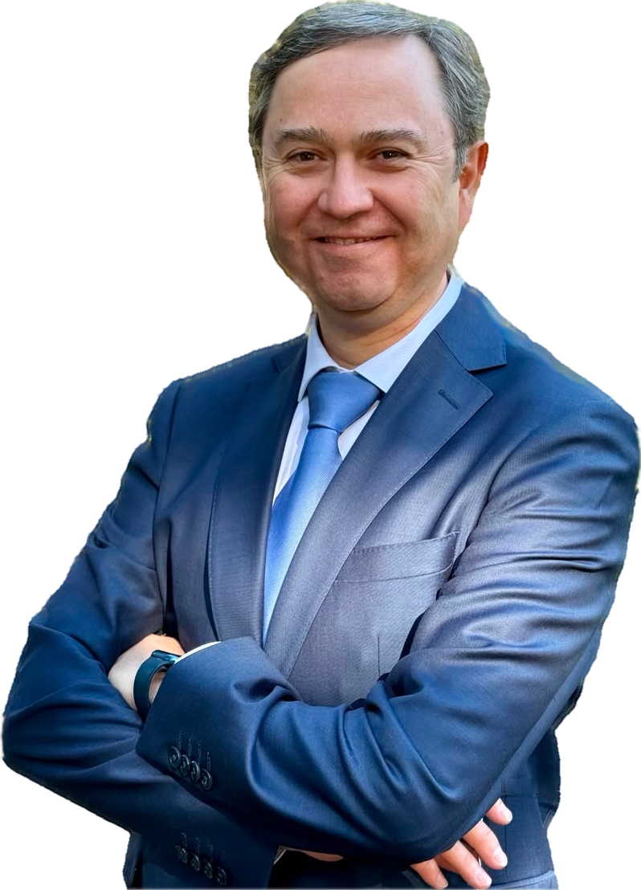

22+TRAYECTORIA PROFESIONAL
Minería, procesos y proyectos
Más de 22 años de experiencia en minería e ingeniería, con una trayectoria desarrollada en procesos metalúrgicos, ingeniería, puesta en marcha y gestión contractual. Con los años, esas responsabilidades se fueron ampliando hacia la coordinación técnica y la gestión de proyectos.
Más de 22 años en minería e ingeniería, con experiencia en procesos metalúrgicos, puesta en marcha, ingeniería y gestión contractual. Con los años, esas responsabilidades se ampliaron hacia la coordinación técnica y la gestión de proyectos.

Minería, procesos y proyectos
Metalurgia, diseño y QA/QC
Perfil, FEL, ingeniería y ejecución
Contratos, disciplinas y equipos
Investigación, operación y procesos metalúrgicos como punto de partida de la trayectoria.
Diseño, QA/QC, contraparte técnica y puesta en marcha en distintas etapas de desarrollo.
Contratos, cartera, coordinación técnica y relación entre especialidades y ejecución.
La experiencia acumulada se integra hoy en responsabilidades de coordinación y gestión.
Una experiencia que se fue ampliando desde la base técnica hacia responsabilidades de ingeniería, coordinación y gestión, a través de distintos equipos, organizaciones y realidades operacionales.
Mi experiencia profesional se ha desarrollado principalmente en minería y metalurgia. Haber trabajado en procesos, ingeniería y proyectos me ha permitido comprender cómo una decisión técnica cambia cuando debe funcionar en terreno, coordinarse con otras disciplinas y responder a las condiciones reales de una operación.
Principio de trabajoEntender bien el problema, ordenar la información y cumplir lo comprometido son parte esencial de una buena gestión.
Mi trayectoria no se construyó de manera inmediata. Se fue desarrollando con el tiempo, desde funciones técnicas y de procesos hacia responsabilidades de ingeniería, contratos, coordinación y proyectos.
He trabajado en investigación aplicada, control metalúrgico, soporte a plantas, ingeniería básica y de detalles, QA/QC, administración de un contrato EPC, contraparte técnica, puesta en marcha y dirección de proyectos.
Trabajar en distintos contextos del norte y centro de Chile, con diferentes equipos, ritmos de trabajo y realidades operacionales, también ha sido parte de esa formación. Esa experiencia me ayuda hoy a comprender el vínculo entre diseño, operación, coordinación y ejecución.
Comprensión de procesos, criterios de diseño y estándares para evaluar la solidez técnica de cada decisión.
Integración de plazos, contratos, riesgos, avances y coordinación multidisciplinaria para convertir la ingeniería en ejecución.
Soluciones pensadas para funcionar en terreno, responder a la realidad de la operación y sostenerse durante su vida útil.
Una forma de trabajar basada en entender bien el problema, comunicar con claridad y cumplir los compromisos asumidos, integrando las distintas especialidades que participan en cada proyecto.
Revisar antecedentes, restricciones y objetivos antes de definir un curso de acción.
Mantener visibles los avances, riesgos, pendientes y compromisos de cada etapa.
Integrar perspectivas técnicas y operacionales para evitar decisiones aisladas.
Utilizar lo aprendido para anticipar problemas sin asumir que dos proyectos son iguales.
Conocimientos desarrollados en distintos roles y etapas, desde procesos metalúrgicos e ingeniería hasta contratos, puesta en marcha y gestión de proyectos.
Planificación, coordinación, gestión de avances, riesgos, cambios y cumplimiento de objetivos.
Administración contractual, revisión técnica, evaluación de ofertas y coordinación con stakeholders.
Fundición, lixiviación, extracción por solventes, molienda, tratamiento de RILES y relaves.
Ingenierías de perfil, prefactibilidad y factibilidad para depósitos de relaves y cierre de instalaciones.
Cumplimiento de estándares, criterios de diseño, revisión de documentos, planos, P&ID y entregables.
Integración entre diseño, terreno y operación para llevar sistemas complejos a condiciones productivas.
Selección de proyectos relevantes presentada a nivel general, respetando el carácter reservado de la información técnica y contractual.
Participación en las etapas de ingeniería básica, ingeniería de detalles y terreno, junto con la administración del contrato EPC de la Planta de Tratamiento de Efluentes.
Este proyecto reunió gestión contractual, coordinación técnica, procesos metalúrgicos, aseguramiento de calidad y relación entre ingeniería y ejecución.
Ingeniería para EIA y TOVE, CODELCO División Andina.
Servicio de líder de contraparte para la ingeniería de factibilidad del proyecto.
Ingenierías de perfil y prefactibilidad para Fundición Ventanas y depósitos Carén, Pampa Austral, Ovejería y Talabre.
Liderazgo de puesta en marcha en la transformación a doble contacto y doble absorción.
El cargo actual de Project Manager es una etapa reciente de una trayectoria más amplia. El recorrido comenzó en funciones técnicas y metalúrgicas, incorporó progresivamente ingeniería, contratos y coordinación, y con los años fue sumando responsabilidades de proyecto.
Investigación aplicada, metalurgia, soporte técnico y experiencia directa con procesos productivos.
Ingeniería, trabajo interdisciplinario y responsabilidades crecientes en desafíos de mayor complejidad.
Experiencia en ingeniería, contratos, contraparte técnica, puesta en marcha y coordinación de equipos.
La experiencia acumulada se integra hoy en la gestión y coordinación de proyectos multidisciplinarios.
Administrador de contrato del Proyecto Ramsay, ingeniería para EIA y TOVE de CODELCO División Andina.
Jefe de Ingeniería del Proyecto Ramsay y apoyo a proyectos de factibilidad, prefactibilidad y cierre para CODELCO.
Apoyo de contraparte para la Gerencia de Proyectos del Distrito Norte de CODELCO.
Apoyo de contraparte, puesta en marcha, ingeniería de detalles, coordinación con contratistas y gestión de cambios.
Gestión de cartera, liderazgo de equipos, control presupuestario y administración de ingenierías.
Soporte técnico y gestión de iniciativas de ingeniería para proyectos mina–planta.
Responsabilidades asociadas al control de calidad y control de procesos de la planta de relaves.
Asesoría y consultoría independiente en procesos e ingeniería, con foco en gestión de proyectos.
Garante de estándares, líder de disciplina, administrador de contrato EPC y líder de puesta en marcha.
Ingeniería básica y de detalles, calidad de diseño, coordinación interdisciplinaria y liderazgo de profesionales de procesos.
Soporte técnico a plantas, pruebas de laboratorio y planta, optimización técnica y económica de procesos.
Evaluación del proceso productivo, control de márgenes operacionales, pruebas metalúrgicas e inventario de metales.
Desarrollo y gestión de proyectos de innovación en pirometalurgia para sustentar el negocio de División El Teniente.
Una formación técnica complementada con herramientas de dirección, evaluación y administración, incorporadas a medida que fueron aumentando las responsabilidades profesionales.
Universidad de Santiago de Chile
Base técnica en procesos metalúrgicos, transformación de minerales y comprensión integral de sistemas productivos.
Pontificia Universidad Católica de Chile
Pontificia Universidad Católica de Chile
Pontificia Universidad Católica de Chile
Experiencia acumulada para transformar criterios técnicos en decisiones coordinadas y ejecutables.
Gestión de proyectos, administración contractual —incluido un contrato EPC— y relación con stakeholders.
Ingeniería conceptual, básica y de detalles; hidrometalurgia y pirometalurgia.
Equipos multidisciplinarios, QA/QC de ingeniería, relaves y cierre.
Canal de contacto profesional para mantener redes, intercambiar experiencias y conversar sobre minería, ingeniería y gestión de proyectos.